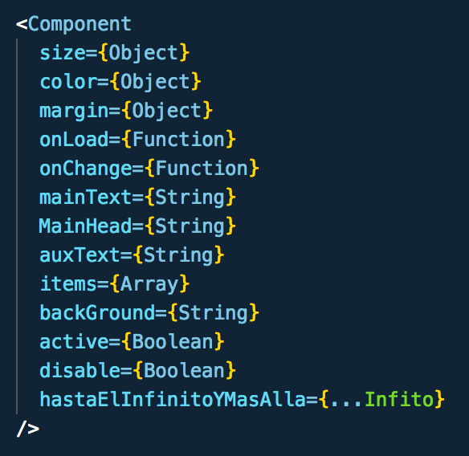
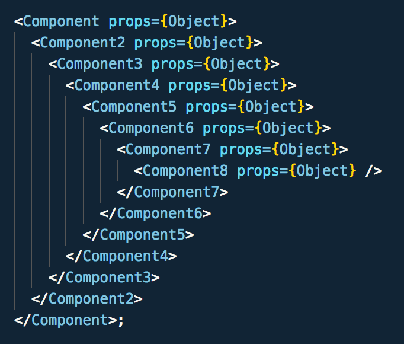
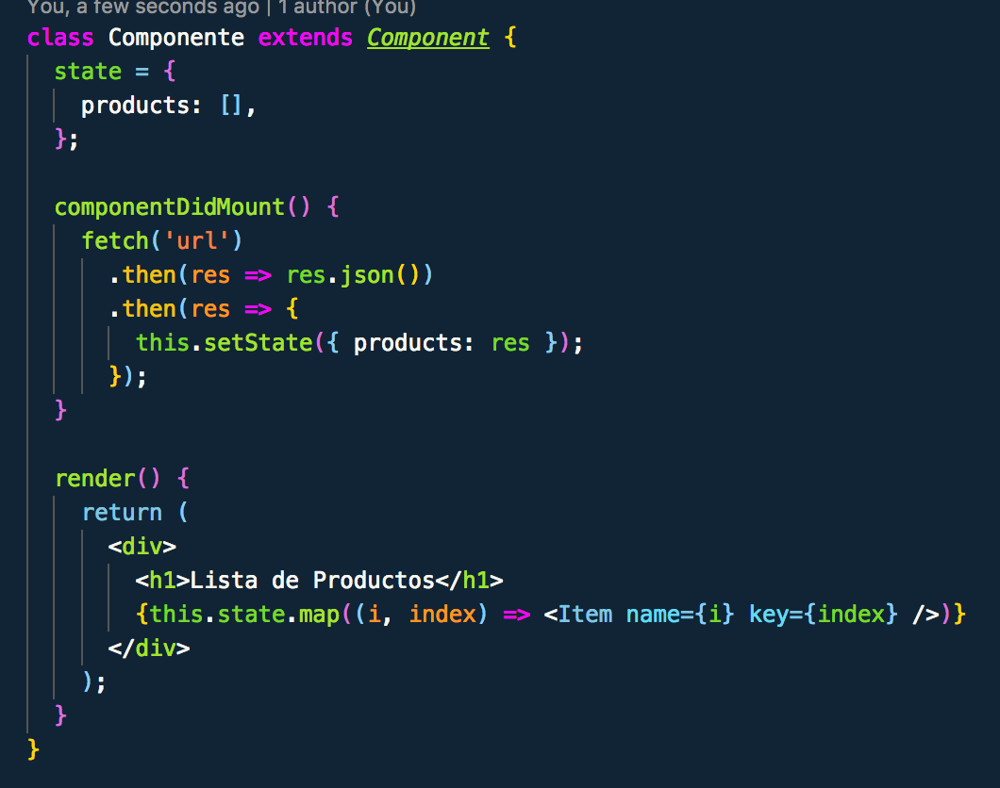

Redux MasterClass
El modelo de datos mas famoso
El problema
La abstracción de los datos
Componentes poco reutilizables
Componente spaghetti
Poca abstracción
Metodología Flux
La verdadera M del MVC
¿Que es Flux?
Es un patrón/arquitectura de modelos de datos
Los modelos son independientes y externos a la aplicación
Los datos son inmutables, extraíbles, y replegables
Fáciles de testear, ejecutar, y traspasar de framework o proyecto
Flux en detalle...

Se basa en la creación de varios contenedores donde guardar los datos
Para modificar el store, solo se puede acceder a través de acciones
Dichas acciones son manejadas por el dispatcher
Los Stores son copiados en cada modificación, siendo inmutables
redux
The Flux Library
¿Que es Redux?
Es una librería JS que implementa Flux
Extremadamente ligera, 2kB y no tiene dependencias
Puede implementarse en cualquier framework
Nos aporta una serie de metodos para agilizar Flux
Diferencias:
Implementa 1 solo Store, y no soporta Dispatcher
Admite varios reducers que se combinan
Diagrama Redux

Acciones
Son la única forma de comunicarnos con el Store
Las acciones son objetos simples con type y un payload
{ payload: {}, type: 'NOMBRE' }
Para lanzarlas usamos los creadores de acciones
Son funciones que reciben el payload y emiten una acción
payload => ({ payload, type: 'NAME' })
Reducers
Son el intermediario entre las Acciones y el Store
Siempre deben ser funciones puras "INMUTABLES"
pureFunc = ( a, b ) => a + b
Estas funciones deben siempre devolver el estado
Para no mutar el estado debemos hacer una copia exacta
Object.assign({}, obj);
spread operator ...
Store
El store es nuestro contenedor de datos global
Se crea con los reducers y middleware
createStore(allReducers, {initialState}, allMiddleware);
Y . . .

A programar!